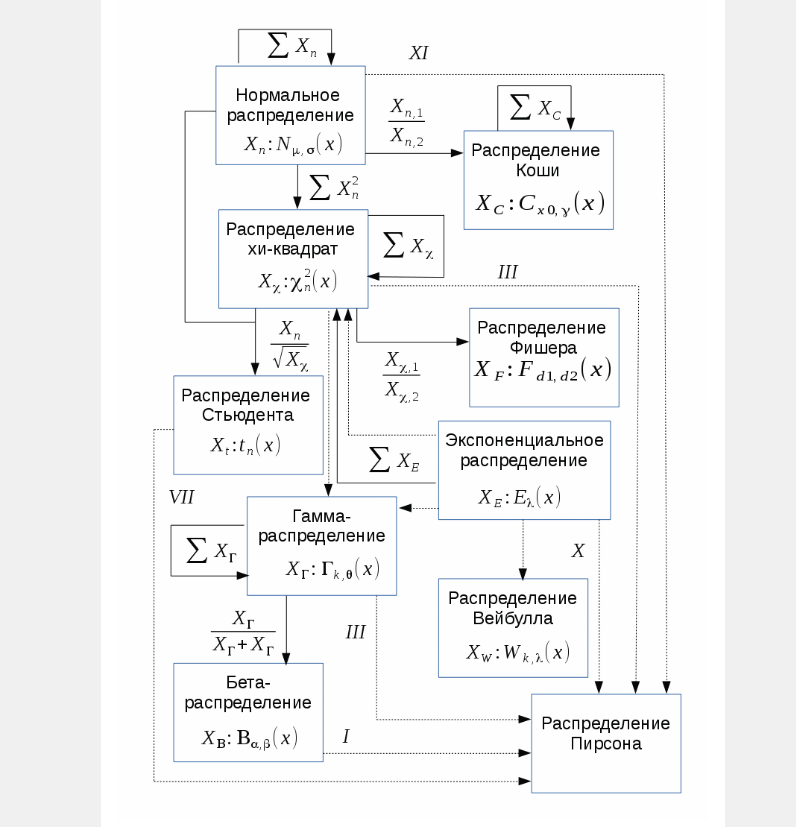
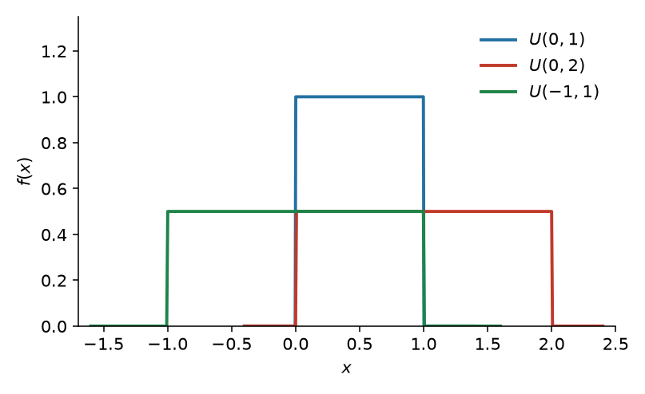
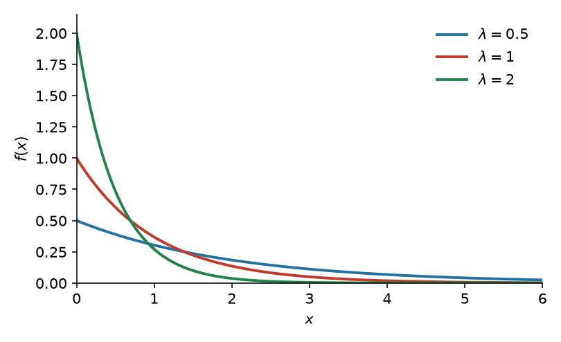
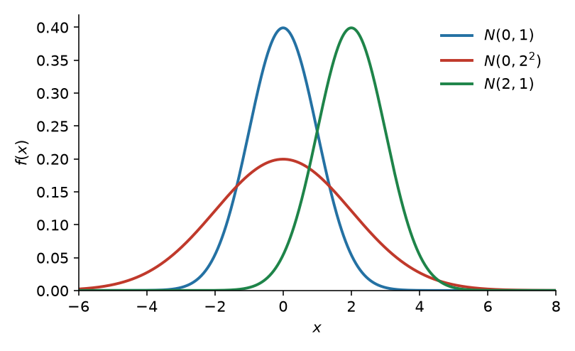
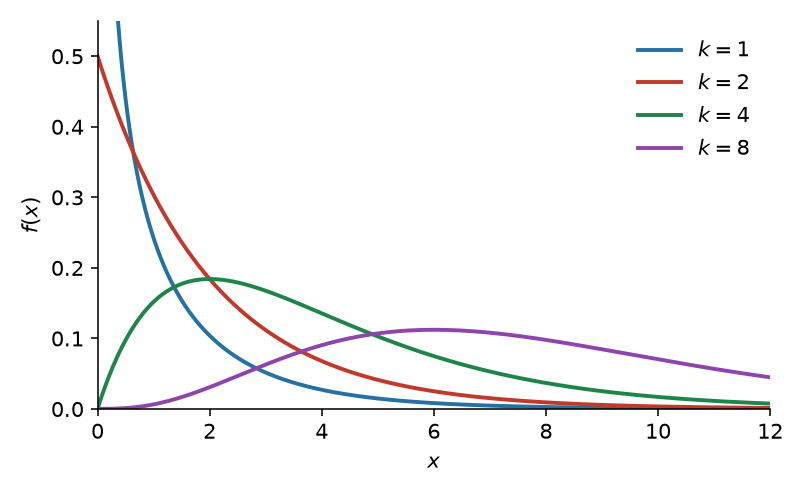
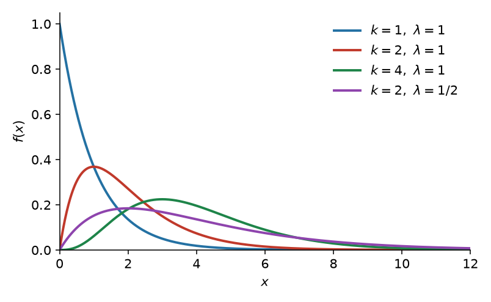
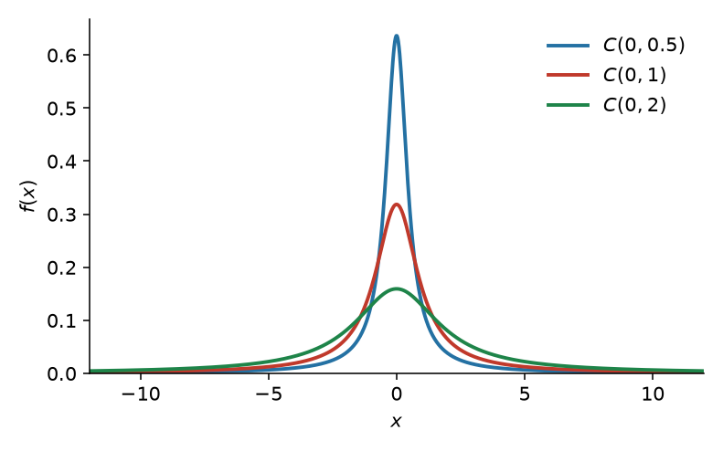
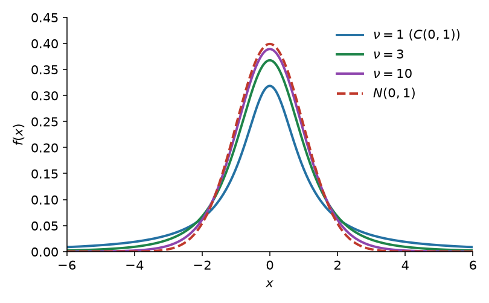
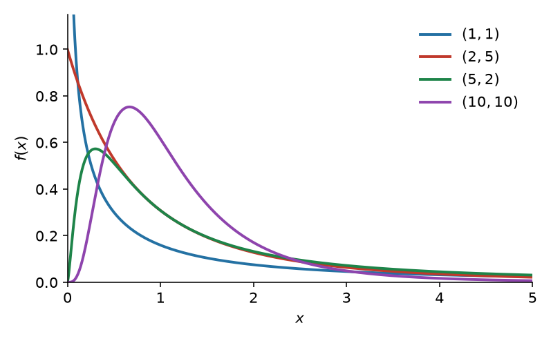
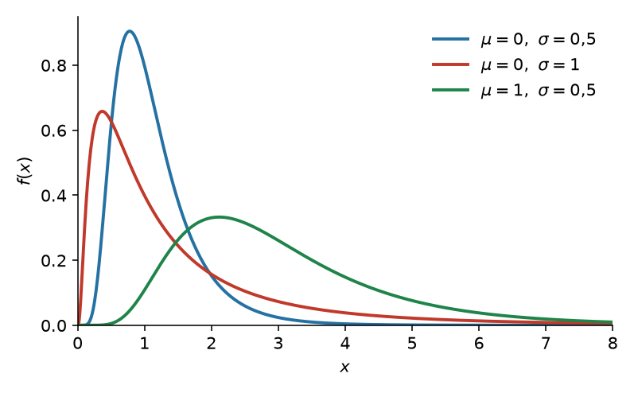

Практика 8. Зоопарк непрерывных распределений¶
На доску
В отличие от дискретных распределений, где каждое создано под конкретную цель, основная польза известных непрерывных — в том, что они удобно связаны друг с другом.
На доску
Берём три распределения с понятным физическим смыслом (равномерное, экспоненциальное, нормальное) и выводим из них остальные.

Равномерное¶
На доску
| \(U(a,b)\) | |
|---|---|
| Носитель | \(x\in[a,b]\) |
| Функция распределения | \(0\) при \(x<a\); \(\dfrac{x-a}{b-a}\) при \(a\le x\le b\); \(1\) при \(x>b\) |
| Плотность | \(\dfrac{1}{b-a}\) на \((a,b)\) |
| Матожидание | \(\dfrac{a+b}{2}\) |
| Дисперсия | \(\dfrac{(b-a)^2}{12}\) |

На доску
Чаще всего возникает в геометрических задачах и в задачах, где мы ничего не знаем об объекте.
Экспоненциальное¶
На доску
| \(\operatorname{Exp}(\lambda)\) | |
|---|---|
| Носитель | \(x\in[0;+\infty)\) |
| Функция распределения | \(1-e^{-\lambda x}\) при \(x\ge 0\) |
| Плотность | \(\lambda e^{-\lambda x}\) при \(x\ge 0\) |
| Матожидание | \(\dfrac{1}{\lambda}\) |
| Дисперсия | \(\dfrac{1}{\lambda^2}\) |

На доску
Показательный закон надёжности: длительность времени безотказной работы элемента. Интервалы простейшего потока событий — тоже экспоненциальные: время до первого события.
На доску
Экспоненциальное можно использовать только при отсутствии старения: вероятность поломки за промежуток \(X\) не зависит от того, где этот \(X\) расположен и наоборот: при отсутствии старения можно использовать только экспоненциальное. Должно выполняться \(P(X)P(Y) = P(X+Y)\), а решения этого уравнения всегда вида \(e^{ax}\).
На доску
Для жизни одной детали этого достаточно. Если отказ — первое событие потока, к отсутствию старения добавляется постоянная интенсивность (стационарность); ординарность нужна, чтобы в \(dt\) писать \(\lambda\,dt\).
Нормальное¶
На доску
| \(N(\mu,\sigma^2)\) | |
|---|---|
| Носитель | \(x\in(-\infty;+\infty)\) |
| Функция распределения | \(\Phi\bigl((x-\mu)/\sigma\bigr)\), где \(\Phi(x)=\dfrac{1}{\sqrt{2\pi}}\displaystyle\int_{-\infty}^{x} e^{-t^{2}/2}\,dt\) |
| Плотность | \(\dfrac{1}{\sigma\sqrt{2\pi}}\,e^{-\frac12\bigl((x-\mu)/\sigma\bigr)^2}\) |
| Матожидание | \(\mu\) |
| Дисперсия | \(\sigma^2\) |

На доску
Существует ЦПТ: центральные предельные теоремы (ЦПТ) — класс теорем в теории вероятностей, утверждающих, что сумма достаточно большого количества слабо зависимых случайных величин, имеющих примерно одинаковые масштабы (ни одно из слагаемых не доминирует, не вносит в сумму определяющего вклада), имеет распределение, близкое к нормальному.
На доску
Из-за этого распределение многих вещей в природе близко к нормальному:
- погрешности измерений
- рост людей
- точка, куда попадёт стрела по оси \(X\)
Хи-квадрат¶
На доску
| \(\chi^2(k)\) | |
|---|---|
| Носитель | \(x\in[0;+\infty)\) |
| Функция распределения | \(\dfrac{\gamma(k/2,\,x/2)}{\Gamma(k/2)}\) |
| Плотность | \(\dfrac{(1/2)^{k/2}}{\Gamma(k/2)}\,x^{k/2-1}e^{-x/2}\) |
| Матожидание | \(k\) |
| Дисперсия | \(2k\) |

На доску
Его уже получили в практике 7, возведением стандартного нормального в квадрат: если \(Z_1,\ldots,Z_k\) независимы и \(N(0,1)\), то \(Z_1^2+\cdots+Z_k^2\sim\chi^2(k)\). Живёт в матстате: выборочная дисперсия нормальной выборки, критерий согласия Пирсона.
Гамма¶
На доску
Форма \(k>0\), интенсивность \(\lambda>0\) (как у экспоненциального). Другая параметризация — масштаб \(\theta=1/\lambda\).
| \(\Gamma(k,\lambda)\) | |
|---|---|
| Носитель | \(x\in(0;+\infty)\) |
| Функция распределения | \(\dfrac{\gamma(k,\,\lambda x)}{\Gamma(k)}\) |
| Плотность | \(\dfrac{\lambda^k}{\Gamma(k)}\,x^{k-1}e^{-\lambda x}\) |
| Матожидание | \(\dfrac{k}{\lambda}\) |
| Дисперсия | \(\dfrac{k}{\lambda^2}\) |

На доску
Время до \(n\)-го события простейшего потока; суммы времён обслуживания, осадки, страховые выплаты. Для этого нужны все три аксиомы простейшего потока: интервалы н.о.р. экспоненциальные с постоянным \(\lambda\), события поодиночке.
На доску
Связь с уже известными:
- \(\operatorname{Exp}(\lambda)=\Gamma(1,\lambda)\)
- Эрланг: \(\Gamma(n,\lambda)\) при целом \(n\) — сумма \(n\) независимых \(\operatorname{Exp}(\lambda)\)
- \(\chi^2(k)=\Gamma(k/2,\,\lambda=1/2)\)
Коши¶
На доску
| \(C(x_0,y)\) | |
|---|---|
| Носитель | \(x\in(-\infty;+\infty)\) |
| Функция распределения | \(\dfrac{1}{\pi}\operatorname{arctg}\dfrac{x-x_0}{y}+\dfrac12\) |
| Плотность | \(\dfrac{1}{\pi y\bigl(1+\bigl((x-x_0)/y\bigr)^2\bigr)}\) |
| Матожидание | не существует |
| Дисперсия | не существует |

На доску
Отношение двух независимых стандартных нормальных; ордината случайного луча. Хвосты настолько тяжёлые, что нет матожидания: выборочное среднее не сходится к константе (снова Коши), ЦПТ не работает. Стандартное \(C(0,1)\) — это Стьюдент с \(\nu=1\).
Стьюдент¶
На доску
| \(t_\nu\) | |
|---|---|
| Носитель | \(x\in(-\infty;+\infty)\) |
| Функция распределения | \(\dfrac12+\dfrac{x\,\Gamma\bigl((\nu+1)/2\bigr)}{\sqrt{\nu\pi}\,\Gamma(\nu/2)}\,{}_2F_1\bigl(\tfrac12,\tfrac{\nu+1}{2};\tfrac32;-x^2/\nu\bigr)\) |
| Плотность | \(\dfrac{\Gamma\bigl((\nu+1)/2\bigr)}{\sqrt{\nu\pi}\,\Gamma(\nu/2)}\bigl(1+x^2/\nu\bigr)^{-(\nu+1)/2}\) |
| Матожидание | \(0\) при \(\nu>1\); иначе не существует |
| Дисперсия | \(\dfrac{\nu}{\nu-2}\) при \(\nu>2\); иначе не существует |

На доску
Если \(Z\sim N(0,1)\) и \(V\sim\chi^2(\nu)\) независимы, то
На доску
Нормальное, делённое на корень из хи-квадрат. При \(\nu=1\) это Коши; при \(\nu\to\infty\) плотность идёт в \(N(0,1)\).
На доску
В матстате: нормальная выборка, \(\sigma\) неизвестна — статистика \((\bar X-\mu)/(s/\sqrt n)\) имеет распределение Стьюдента. Отсюда \(t\)-критерии и доверительные интервалы для среднего.
Фишер¶
На доску
| \(F(d_1,d_2)\) | |
|---|---|
| Носитель | \(x\in(0;+\infty)\) |
| Функция распределения | \(I_{\frac{d_1 x}{d_1 x+d_2}}\bigl(\tfrac{d_1}{2},\tfrac{d_2}{2}\bigr)\) |
| Плотность | \(\dfrac{1}{B(d_1/2,\,d_2/2)}\Bigl(\dfrac{d_1}{d_2}\Bigr)^{d_1/2} x^{d_1/2-1}\bigl(1+\tfrac{d_1}{d_2}x\bigr)^{-(d_1+d_2)/2}\) |
| Матожидание | \(\dfrac{d_2}{d_2-2}\) при \(d_2>2\) |
| Дисперсия | \(\dfrac{2d_2^2(d_1+d_2-2)}{d_1(d_2-2)^2(d_2-4)}\) при \(d_2>4\) |

На доску
Если независимые \(U\sim\chi^2(d_1)\), \(V\sim\chi^2(d_2)\), то
На доску
Отношение двух хи-квадрат. В матстате — сравнение двух выборочных дисперсий, дисперсионный анализ.
Логнормальное¶
На доску
| \(\operatorname{LogN}(\mu,\sigma^2)\) | |
|---|---|
| Носитель | \(x\in(0;+\infty)\) |
| Функция распределения | \(\Phi\bigl((\ln x-\mu)/\sigma\bigr)\) |
| Плотность | \(\dfrac{1}{x\sigma\sqrt{2\pi}}\exp\bigl[-(\ln x-\mu)^2/(2\sigma^2)\bigr]\) |
| Матожидание | \(e^{\mu+\sigma^2/2}\) |
| Дисперсия | \(\bigl(e^{\sigma^2}-1\bigr)e^{2\mu+\sigma^2}\) |

На доску
Логнормальное распределение появляется как распределение преобразования \(X=e^Y\), где \(Y\sim n(\mu,\sigma^2)\).
- Нормальное распределение моделирует аддитивное наполнение ошибки
- Логнормальное распределение моделирует мультипликативное наполнение ошибки
На доску
Например, рассмотрим модель экспоненциального роста популяции \(N\)
На доску
где \(r\) — скорость роста и \(\omega(t)\) — некоторый случайный шум.